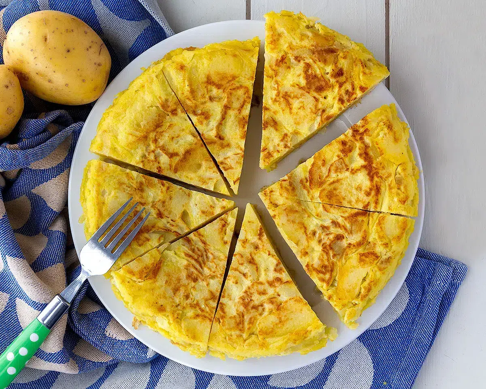

Ingredientes
- Patatas
- Huevos
- Aceite de oliva
- Sal
Preparación
- Pelar y cortar las patatas en rodajas finas.
- Freír las patatas en aceite de oliva hasta que estén tiernas.
- Batir los huevos en un recipiente y añadir las patatas y la sal.
- Verter la mezcla en una sartén y cocinar por un lado.
- Dar la vuelta a la tortilla y cocinar hasta que esté hecha.
- Servir la tortilla.